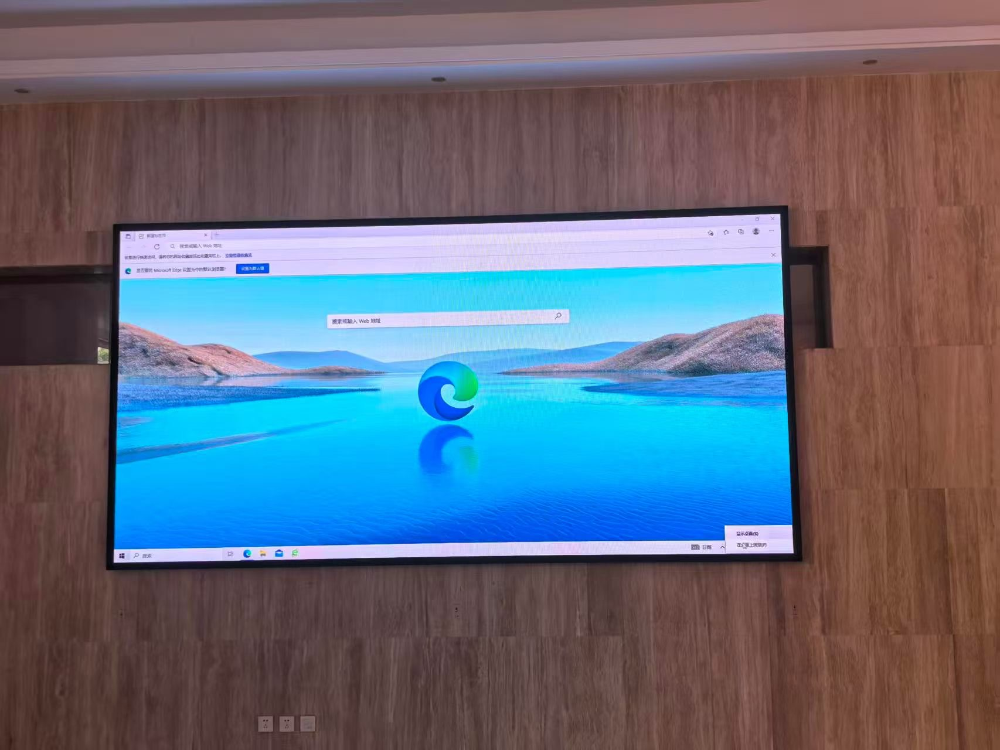
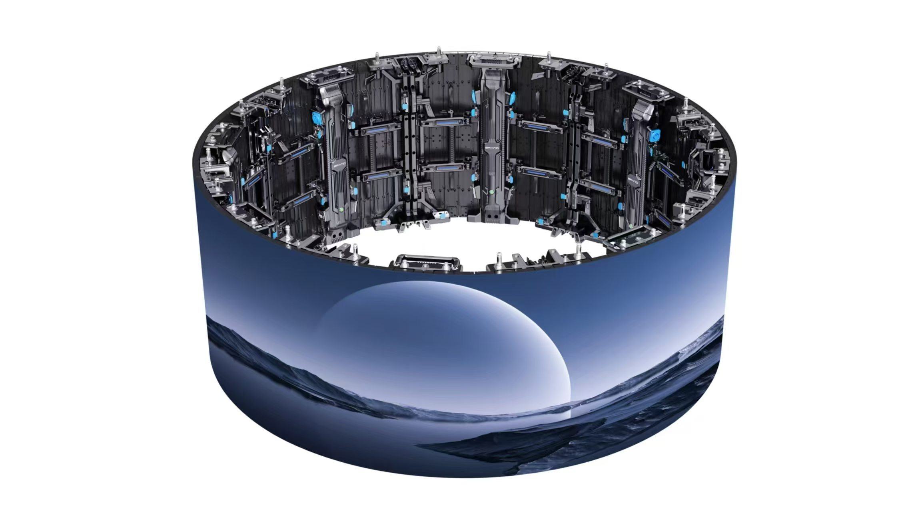

By Cassie
What does a Romania LED display importer need to know? Importing LED displays into Romania means clearing goods through the Black Sea port of Constanta, holding CE marking and a Declaration of Conformity for every model, registering as a WEEE producer before the first sale, and specifying equipment for a continental climate that swings from hot summers to hard winters. This 2026 guide explains each step.
Romania is the second largest economy in Central and Eastern Europe and one of the faster growing LED display markets in the European Union. Demand comes from retail chains, banking, transport operators, shopping centres, stadiums, and public-sector signage, and almost every professional screen is imported from Asia.
A Romania LED display importer who prepares the customs file, the conformity documents, and the producer registration before dispatch clears cargo without difficulty. The obligations that most often catch buyers out are the WEEE registration and the accuracy of the customs value declared at entry.
Romania is inside the European Union customs union, so goods entering through Constanta on the Black Sea are released into free circulation with a single Union customs declaration. The importer must hold an EORI number, which identifies the economic operator in all customs transactions across the Union.
Customs in Romania is administered by the Romanian Customs Authority. Declarations are filed electronically, and most importers use a licensed customs representative rather than filing directly. Where the goods land at another Union port first, the shipment moves under a transit procedure and is cleared in Romania on arrival.
| Step | What Is Required | Who Handles It |
|---|---|---|
| EORI registration | EORI number issued in Romania | Importer |
| Customs representation | Licensed representative or direct filing | Importer |
| Import declaration | Single Union declaration at entry | Customs representative |
| Customs value | Transaction value adjusted to the Incoterm | Importer |
| Conformity documents | CE marking and Declaration of Conformity | Supplier, verified by importer |
| WEEE registration | Producer registration before the first sale | Importer |
| Inland transport | Delivery from Constanta to site | Importer or carrier |
As a European Union member state, Romania applies the harmonised product legislation of the Union. LED displays and their power supplies fall under the Low Voltage Directive and the Electromagnetic Compatibility Directive, and a display that incorporates radio equipment such as a wireless controller also falls under the Radio Equipment Directive.
Separately, Romania transposes the WEEE Directive and requires producers of electrical and electronic equipment to register before placing goods on the market and to finance the collection and recycling of the equipment they put on the market. Producers usually join a collective compliance organisation, and the packaging that carries the products is subject to a separate responsibility.
| Requirement | What It Covers | Evidence to Hold |
|---|---|---|
| CE marking | Conformity with the applicable Union directives | CE mark on the product and the packaging |
| Declaration of Conformity | The specific model placed on the market | Signed declaration naming the model |
| Safety test report | Electrical safety under the Low Voltage Directive | Report naming the offered model |
| EMC test report | Electromagnetic compatibility | Report naming the offered model |
| Radio test evidence | Wireless controllers and modules | Report and equipment documentation |
| RoHS evidence | Hazardous substance limits | Supplier declaration and test data |
| WEEE registration | Producer responsibility for e-waste | Registration number and compliance contract |
Duty is assessed on the customs value, which is normally the transaction value adjusted to the Incoterm agreed with the supplier. Import value added tax is charged on the duty-paid value, and for a VAT-registered business it is recoverable, so its effect is on cash flow rather than on final cost.
| Cost Element | Basis | Notes |
|---|---|---|
| Customs duty | Union tariff by commodity code | Confirm the rate for the exact code |
| Import VAT | Value plus duty plus freight and insurance | Recoverable for a registered business |
| Customs representation | Per declaration | Varies by representative and volume |
| Terminal handling | Per container at Constanta | Confirm what the freight rate includes |
| WEEE and packaging | Per unit or by weight | Ongoing after the goods are sold |
| Inland transport | By distance from the port | Confirm delivery to site |
| Storage and demurrage | Per day after the free period | Mounts if the file is incomplete |
Most importers work through a licensed customs representative who files the declaration and manages the relationship with the customs office. Choose a representative who regularly clears electronic goods, because the classification of a display, its power supplies, its control hardware, and its mounting steel differs and each line carries its own treatment.
Give the representative the complete document pack before dispatch, including the commercial invoice, the packing list, the bill of lading, and the conformity documents. A shipment that reaches Constanta with an incomplete file is held while the gap is filled, and terminal storage accumulates for every day the container remains.
Romania has a temperate continental climate, with hot summers that push past thirty degrees and winters that bring sustained frost and snow, particularly in the interior and the Carpathian region. The Black Sea coast near Constanta is more humid and more exposed to salt air than the interior.
For Romanian sites, low winter temperatures make cabinet construction and sealing the deciding factors — the X Series uses standard 500×500mm cabinets with front/rear service, and the COB EF outdoor series is sealed against snow-melt and moisture ingress.
| Condition | Risk | Specification Response |
|---|---|---|
| Winter frost and snow | Mechanical load and cold-start stress | Rated operating range and snow-load design for the mount |
| Summer heat | Thermal stress on power supplies | Higher temperature rating and a derating plan |
| Wide seasonal temperature swing | Condensation on cold components | Sealed cabinets and controlled ventilation |
| Black Sea coastal humidity and salt | Corrosion of connectors and hardware | Corrosion-protected hardware and a high ingress rating |
| Wind loading on elevated structures | Structural failure of the mount | Engineered steelwork to the local wind load |
| 230 volt supply and grid disturbance | Damage to driver electronics | Supplies rated for 230 volts with surge protection |
Most LED display cargo reaches Romania by sea, entering through Constanta on the Black Sea. Some shipments are routed through a northern European port and moved overland under a transit procedure, which can be competitive on rate but adds a road leg and a second set of handling charges.
| Stage | Typical Duration | What Can Delay It |
|---|---|---|
| Production | 15 to 25 working days | Component availability and queue |
| Inland to port and export | 3 to 5 days | Booking availability |
| Sea freight | Varies by routing | Routing and carrier schedule |
| Transit or entry formalities | 1 to 4 days | Document queries and valuation checks |
| Import clearance | 2 to 5 days | Incomplete conformity or classification |
| Inland delivery | 1 to 4 days | Distance, traffic, and unloading arrangements |
| Total | Approximately 6 to 9 weeks | Add a buffer for the season |
Add at least two weeks of buffer beyond the quoted transit time. Port congestion and peak-season booking pressure both lengthen the schedule, and a screen tied to an opening date has no room to absorb that delay.
Ask every candidate the same questions and record the answers. For Romanian projects the conformity documentation, the voltage configuration, and the WEEE support matter as much as the price.
| Question | What a Strong Answer Looks Like | Warning Sign |
|---|---|---|
| CE documentation for this model | Declaration of Conformity naming the model | A generic certificate for the range |
| Technical file | File available for inspection | Refused or unavailable |
| WEEE and packaging support | Clear statement of who registers | Responsibility not addressed |
| Voltage configuration | Supplies built for 230 volts | One configuration offered for all markets |
| Packaging standard | Crating method described for sea freight | Not addressed |
| Spare parts availability | Stated period in writing | No commitment given |
| Service response | Stated time by fault severity | Answer avoided |
Confirm the components in writing and require written approval for any substitution. A supplier facing a component shortage may change a part quietly, and a change to a driver or a power supply can invalidate the test evidence the Declaration of Conformity relies on.
Each mistake is inexpensive to avoid during planning and costly after the goods land. A Romania LED display importer who prepares the conformity file, registers as a producer, and specifies for the climate avoids most of them.
Asia Vision Technology manufactures LED displays in Shenzhen and supplies importers, distributors, and contractors across Europe. The factory prepares the test documentation that supports a Declaration of Conformity, builds cabinets to the voltage and climate of the destination, and holds spare parts for the stated warranty period.

Related reading: Nepal LED Display Importer Guide 2026: NBSM and Customs